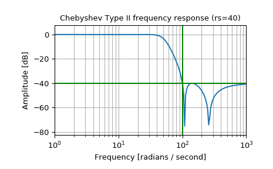
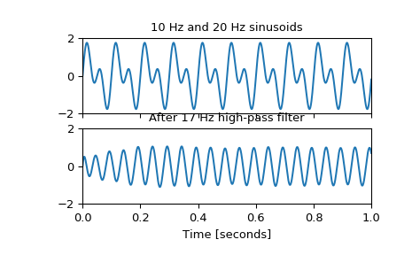

scipy.signal.cheby2¶
-
scipy.signal.cheby2(N, rs, Wn, btype='low', analog=False, output='ba', fs=None)[source]¶ Chebyshev type II digital and analog filter design.
Design an Nth-order digital or analog Chebyshev type II filter and return the filter coefficients.
- Parameters
- Nint
The order of the filter.
- rsfloat
The minimum attenuation required in the stop band. Specified in decibels, as a positive number.
- Wnarray_like
A scalar or length-2 sequence giving the critical frequencies. For Type II filters, this is the point in the transition band at which the gain first reaches -rs.
For digital filters, Wn are in the same units as fs. By default, fs is 2 half-cycles/sample, so these are normalized from 0 to 1, where 1 is the Nyquist frequency. (Wn is thus in half-cycles / sample.)
For analog filters, Wn is an angular frequency (e.g., rad/s).
- btype{‘lowpass’, ‘highpass’, ‘bandpass’, ‘bandstop’}, optional
The type of filter. Default is ‘lowpass’.
- analogbool, optional
When True, return an analog filter, otherwise a digital filter is returned.
- output{‘ba’, ‘zpk’, ‘sos’}, optional
Type of output: numerator/denominator (‘ba’), pole-zero (‘zpk’), or second-order sections (‘sos’). Default is ‘ba’ for backwards compatibility, but ‘sos’ should be used for general-purpose filtering.
- fsfloat, optional
The sampling frequency of the digital system.
New in version 1.2.0.
- Returns
- b, andarray, ndarray
Numerator (b) and denominator (a) polynomials of the IIR filter. Only returned if
output='ba'.- z, p, kndarray, ndarray, float
Zeros, poles, and system gain of the IIR filter transfer function. Only returned if
output='zpk'.- sosndarray
Second-order sections representation of the IIR filter. Only returned if
output=='sos'.
Notes
The Chebyshev type II filter maximizes the rate of cutoff between the frequency response’s passband and stopband, at the expense of ripple in the stopband and increased ringing in the step response.
Type II filters do not roll off as fast as Type I (
cheby1).The
'sos'output parameter was added in 0.16.0.Examples
Design an analog filter and plot its frequency response, showing the critical points:
>>> from scipy import signal >>> import matplotlib.pyplot as plt
>>> b, a = signal.cheby2(4, 40, 100, 'low', analog=True) >>> w, h = signal.freqs(b, a) >>> plt.semilogx(w, 20 * np.log10(abs(h))) >>> plt.title('Chebyshev Type II frequency response (rs=40)') >>> plt.xlabel('Frequency [radians / second]') >>> plt.ylabel('Amplitude [dB]') >>> plt.margins(0, 0.1) >>> plt.grid(which='both', axis='both') >>> plt.axvline(100, color='green') # cutoff frequency >>> plt.axhline(-40, color='green') # rs >>> plt.show()
Generate a signal made up of 10 Hz and 20 Hz, sampled at 1 kHz
>>> t = np.linspace(0, 1, 1000, False) # 1 second >>> sig = np.sin(2*np.pi*10*t) + np.sin(2*np.pi*20*t) >>> fig, (ax1, ax2) = plt.subplots(2, 1, sharex=True) >>> ax1.plot(t, sig) >>> ax1.set_title('10 Hz and 20 Hz sinusoids') >>> ax1.axis([0, 1, -2, 2])
Design a digital high-pass filter at 17 Hz to remove the 10 Hz tone, and apply it to the signal. (It’s recommended to use second-order sections format when filtering, to avoid numerical error with transfer function (
ba) format):>>> sos = signal.cheby2(12, 20, 17, 'hp', fs=1000, output='sos') >>> filtered = signal.sosfilt(sos, sig) >>> ax2.plot(t, filtered) >>> ax2.set_title('After 17 Hz high-pass filter') >>> ax2.axis([0, 1, -2, 2]) >>> ax2.set_xlabel('Time [seconds]') >>> plt.show()
